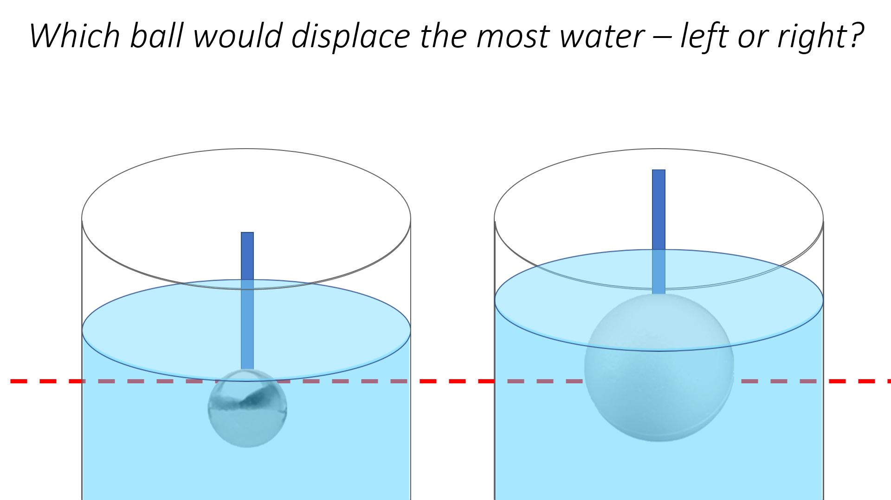

<body>
<main>
		<div class = "flex-container" style="flex-direction:column;">
		<p>My research takes a two-pronged approach to better understand how humans learn - by simulating learning mechanisms computationally and performing intervention experiments.
			My specific training to date includes developing computational models of learning, measuring the impacts of small-scale (lab-based) science-learning interventions, and
			exploring the role of affective and individual differences in varied learning contexts. I perform this work for the benefit of cognitive theory and basic research, but
			also to help guide us toward understanding how to effectively support life outcomes based on developing a better understanding of what underlies critical psychological and social processes. </p>
		<div><h1 style="text-align:center;">Computational Models of Learning, Emotion, and Individual Differences</h1>
			<center></center>
			<p>One major line of my research interests regards innovations in computational modeling and how such models can allow us to efficiently understand and assess short-term educational
				interventions at the individual level. In one set of projects, I model data from an experiment that investigates whether asking children to generate a prediction before presenting
				them with new information (that potentially conflicts with their current world beliefs), can promote children’s belief revision of difficult scientific concepts (e.g., water displacement,
				balance & torque) from a computational perspective. I develop probabilistic Bayesian models of cognition which allows us to compare model predictions to behavioral data, as well as assess and
				compare different accounts of learning. My modeling work has already informed our understanding of computational mechanisms of belief revision by highlighting the importance of individual
				differences in children’s prior beliefs of complex science concepts and their ability to revise these beliefs, further affected by differences in response modality and engagement (e.g., prediction
				vs post-hoc evaluation; Colantonio et al., 2022, IEEE TCDS). Some ongoing work that extends these findings entails the classification of children’s current prior beliefs during the main experiment
				(instead of only post hoc during analysis) for use in a personalized, guided-learning paradigm. </p>
				<p>Furthermore, I conducted other research during my predoctoral training where I explored affective responses, informing one of my broader research interests in understanding how emotional and motivational states interact with learning. For example, recent work for my dissertation (Colantonio et al., in review) investigates mechanisms that recent literature proposes may elicit the pupil dilation response (often referred to as “pupillary surprise”). I tested proposals from two (non-exclusive) computational accounts of “surprise” – the Shannon Information account that focuses on the prior-likelihood of an observed event, and the Kullback-Leibler account that considers the “dissimilarity” between prior beliefs and updated beliefs following observations. Here, I found that the computed Kullback-Leibler divergence significantly correlates with children’s pupillometry only when children were actively making predictions – but no correlation was found between Shannon Information and pupillometry in any context. This further highlights the importance of acknowledging how individual differences (e.g., in initial prior beliefs) may affect learning, as the pupil dilation response may potentially be (to a certain degree) an explicit, quantifiable, physiological signal of children’s belief revision that can be prompted by asking them to make predictions. I am also pursuing other studies that seek to explain how in-the-moment affective responses influence learning. One set of projects investigates how the epistemic emotion of “awe” affects children’s learning through exploration and play (e.g., Colantonio & Bonawitz, 2018; in progress). My initial findings suggest that when induced with awe – compared to contrasting positive emotions like happiness or calm – children may explore through their play more variably. This highlights the influence of fluctuating emotional states and links them to motivation, learning, and exploration. Similarly, for a future experiment, I am designing computational models to inform the specifications
				of a microgenetic experiment to bolster science learning (e.g., by designing trials that would be most likely to elicit behavioral patterns that support learning, such as the pupil dilation response).
				I also eveloped a Bayesian mixture model that allowed for a free parameter varying the degree to which children were “sticky” with their initial beliefs measured prior to the learning phase, and
				fit this parameter for each child based on their learning behavior during the learning phase. We found a strong correlation between this “stickiness” parameter and children’s performance on an
				independent executive function task. </p><br>
		</div>
	  <div><h1 style="text-align:center;">Boosting Learning Outcomes through Emotion Induction and Training Interventions</h1>
			<center></center>
			<p>*text placeholder here</p>
		</div>
</main>
<footer>
		<ul class='center'>
				<li><a href="mailto:colantoniojoseph@gmail.com" class="menu">
					
				</a></li>
				<li><a href="https://github.com/ColantonioLearn", target="_blank" class="menu">
					
				</a></li>
				<li><a href="https://projects.iq.harvard.edu/ccdlab/people/joseph-colantonio", target="_blank" class="menu">
					
				<li><a href="https://www.linkedin.com/in/joseph-colantonio-63186692/", target="_blank" class="menu">
					
				</a></li>
	</ul>
</footer>
</body>
